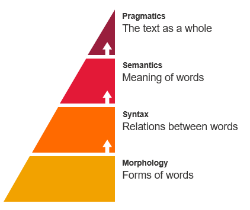

(extended version with outfield, pitcher & catcher - Spring 1945)
Natural Language Processing
Of all the kinds of data we look at, unstructured text is one of the most interesting and challenging. From web sites to social media, research papers to published reports, the world is awash in unstructured text awaiting analysis.
Natural Language Processing (NLP) arose from computational approaches to study written human language. Two of the earliest approaches date to the late 1800's. One leveraged simple word frequencies to build concordances (alphabetical lists of word frequencies in an author or text). Another developed "stylometry" to analyze style and solve authorial attribution. This approach was made famous by the study of the disputed authorship between Hamilton and Adams over several of the Federalist Papers. In 1913, Markov introduced his Markov Chains by analyzing Pushkin's "Eugene Onegin". His model showed how chains of conditional statistical probabilities can give rise to long-term stable patterns in complex system models. More recent (and sophisticated) applications have unmasked authors like J.K. Rowling when she published under a pseudonym.
Although very limited and often heavily criticized by domain experts, simple word frequencies can occasionally be surprisingly useful at surfacing patterns in large texts (for example, in the article "Bankspeak"). We'll also experiment with advanced approaches to sentiment analysis, one area of our research.
Since there is so much to read in the growing field of computational humanities/social science, this week we take a slightly different approach from other weeks. Working in groups of 2, you will select and present a short summary and discussion of a single project. Please scroll down to and take a look at the various options so you can sign up. Note these papers are written for other researchers and can be quite dense. Do your best to focus on the main argument.
- Tuesday: Sentiment Analysis & Text Mining
- Please check Moodle for outstanding Datacamp assignments. I am missing quite a few of you for some/all of last week.
- Extra credit options are due October 31st--check Moodle if you're interested.
- Make sure you're signed up for a Thursday presentation slot (note time/class section). Reach out if there's a second person for your slot and coordinate on a shared presentation. The goal: teach the article to the class in all its nuance.
- Make sure you've pre-registered your txt text with me by drawing the emotional arc. If you missed class Thursday, check with someone else in class or read The Shapes of Stories (assigned below) and draw the arc of the text you've chosen.
- What is NLP (Natural Language Processing)? (9:37), IBM Technology, Aug 2021
- Python Sentiment Analysis Tutorial, Datacamp.com, May 2021 (Skip over the math if necessary, but read through to conclusion.)
- The Shapes of Stories, (READ ONLY: Section 1: The Birth of a Field), Katherine Elkins, Jul 2022, Cambridge UP
- DataCamp Introduction to Natural Language Processing Chapters 1 & 2
- Tensorflow Projection (Words as Continuous Vectors) Explore and try to understand what it means to vectorize language.
- AffectivaAI (Facial emotion detection) Please watch one of the ads and note how well it is able to pick up your emotions. (Note this is fairly old tech)
Thursday: Computational Humanities/Social Science Presentations
-
- DataCamp Intermediate Python Chapter 4 Loops
- Please be ready to respond to questions about your article on
- Present one of the projects listed. Together with the other person in your project slot, create a 3-5 slide presentation (emailed to elkinsk by the night before). Essential are identification of the a) method and b) findings.
- Sign-up Sheets (only one group of 2 per paper):
- 1:10pm Presentation Schedule
- 2:40pm Presentation Schedule
- Mapping Emotions in Victorian England
- Aby Warburg's Pathosformeln
- A Quantitative Literary History *Recommended for literary folks
- Mining the Dispatch
- Not Even Past: Redlining in America
- Mapping Inequality in New Deal America
- Bankspeak; The Language of the World Bank 1945-2012, Franco Moretti and Dominique Pestre, Stanford Literary Lab: Pamphlet #9, Mar 2015
- Sign-up Sheets (only one group of 2 per paper):

In Class: